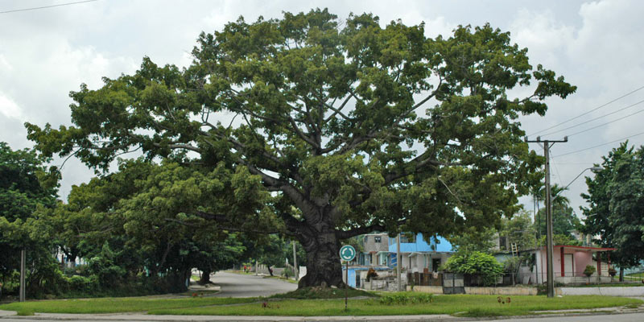

Guatemala
Simbolos Patrios
Bandera

Ave Nacional: Quetzal
Arbol Nacional: La Ceiba
Flor Nacional: La monja Blanca

Historia:
La civilización Maya se desarrolló durante 2.000 años hasta la conquista de los españoles capitaneados por don Pedro de Alvarado en 1.523 Durante el primer milenio, los Mayas alcanzaron un importantisimo desarrollo científico, social y cultural entorno a las grandes ciudades clásicas de los Mayas en El Peten y en las tierras bajas al norte de Guatemala (Yucatán). Méjico). Las naciones – estado de origen maya de los Cakchiqueles, Mames, Quichés y Tzutuhíles, que vivieron en las tierras altas (Altiplano de DGuatemala), aún constituyen una parte significativa de la actual población guatemalteca.
1527
Desde la colonia española (1.527), la historia de los pueblos indígenas guatemaltecos (los Cakchiqueles, Mames, Quichés y Tzutuhíles) ha sido la historia del expolio, la exclusión y a los derechos y a la cultura.
1821
En 1,821 se logra la Independencia, primero formando parte del imperio mejicano, y posteriormente Guatemala perteneció a la efímera Federación de “Provincias Unidas de Centroamérica”. La revolución liberal de final del siglo XIX intentó modernizar el país e introdujo el cultivo del café que solo beneficiaria a los latifundistas criollos.
Los pueblos indígenas continuaban en su exclusión como “hombres de maíz” (Miguel Angel Asturias), refugiados en su cosmogonía, que le da sentido a lo humano, la naturaleza y el universo, formando un todo armónico, equilibrado inspirado en cada persona por su nahualt (guía y protector). Los tejidos, su variedad y colorido, son la expresión plástica y pedagógica de la concepción de la vida y de las relaciones de los hombres y las mujeres mayas con su entorno, Son expresiones vivas y vigentes de filosofía, de sentimientos y de la experiencia vital en la historia de los pueblos mayas.